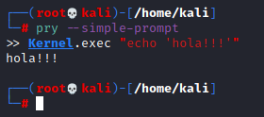
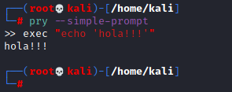
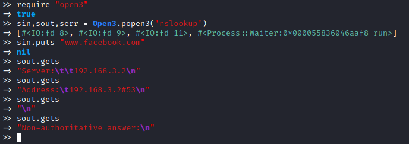

OS interaction
Kernel.execit replaces the current Ruby process with the command passed as argument.
This means that the original command is stopped. Therefore there is no way to interact with the new command.
kernel.exec "[command]"
exec "[command]"
The echo command replaces the pry interpreter (exec method is an abbreviation for Kernel.exec method)
When useful? if we have a script needs to call an external OS command without interacting with it
Kernel.systemIt does not replace the current process(like Kernel.exec); instead it creates a subshell and executes the command passed as argument inside it
• return:
◇
true → If the command argument was found in the OS and it was executed correctly
◇
false→ Otherwise
• prints:
◇
stdout and the
stderror of the command passed as argument
• sets:
◇ global variable
$? with the exit status information of the command execution
• It
cannot handle outputs (stdout and stderror) of any command sub-executed
kernel.system "[command]"
exec "[command]"
It creates a subshell and executes the command passed as argument inside it (like Kernel.system)
• return:
◇ standard output of the command executed in the sub-shell
• It
can handle the output of any command sub-executed
Kernel.`("[command]")
(`command`)When useful? when you have to handle a command output.
IO.popen(
https://ruby-doc.org/core-3.0.0/IO.html)
run commands as subprocesses
• return:
◇
IO object (we can interact with it to obtain the command
stdin and
stdout, not
stderr)
fd=IO.popen("echo 'Hola!'")
fd.readlineTo use popen3, you have to require the open3 library (require ‘open3’).
With it we can interact with all of the three sub-command stream: stdin, stdout and stderr.
• return
◇ IO object (stdin)
◇ IO object (stdout)
◇ IO object (stderr)
To use popen3, you have to require the open3 library (require ‘open3’).
 Note: with gets, we read from stdout each line at time.